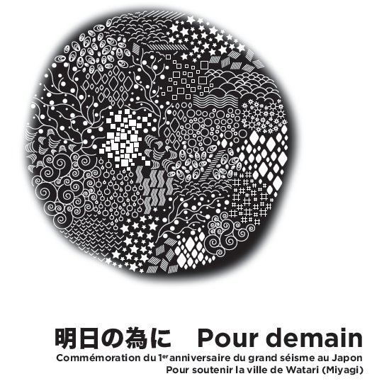

L'association Franco-Japonaise
"Que s’est-il passé ? Le 11 mars 2011, le Japon a subi une catastrophe gigantesque : un tremblement de terre de magnitude 9.0 sur l'échelle de Richter, suivi par un immense Tsunami, générant des vagues de plus de vingt mètres qui ont emporté maisons et familles sur leur passage. Alors qu’on pensait que le pire était passé, on découvre que la centrale de Fukushima Daiichi est dans un état plus que critique, et proche de l’explosion. La catastrophe est aussi nucléaire..."
Evènements
-

2012/03/11 "Pour Demain"
en commémoration du premier anniversaire du séisme survenu au Japon le 11 Mars 2011, une journée caritative fut célébré, afin que les efforts entrepris pour surmonter cette tragédie ne soient pas oubliés. Cette journée se déroula à la Maison des Associations ainsi qu'au Cinéma des Lumières à Nanterre, rythmée par la vente de plats Japonais, d'artisanat et d'origamis suspendus, de démonstrations de calligraphie, la vente d'oeuvres artisanales créées par les victimes du séisme au Japon, l'exposition des photos d'animaux abandonnés et leurs amis Japonais, la projection de diaporamas
Nanterre Ville - Le séisme 1 an après »
Le saviez-vous?
le senbazuru
Senbazuru signifie "la Légende des milles grues", une légende originaire du Japon selon laquelle on peut voir son voeu de santé, longévité, d'amour ou de bonheur s'exaucé si l'on plie mille grues en papier. Il s'agit bien entendu d'origamis, pratique très rampandue au Japon.